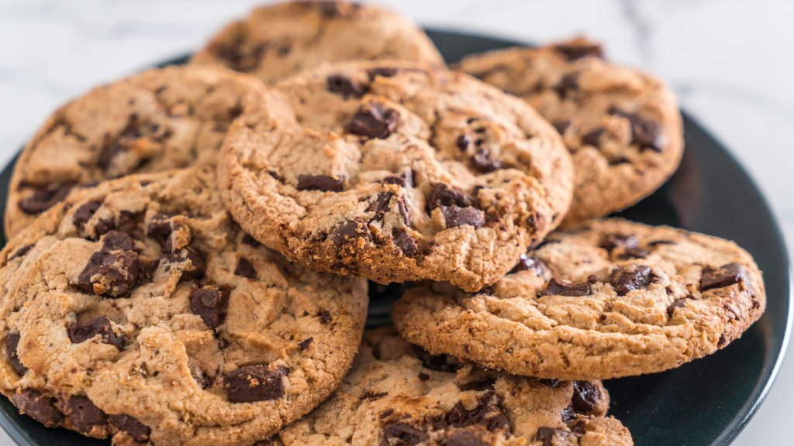
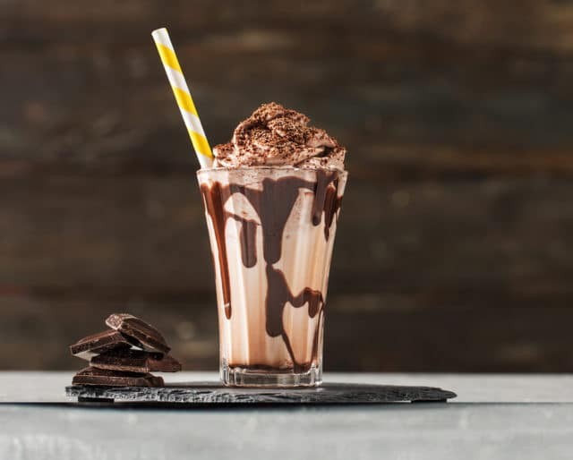
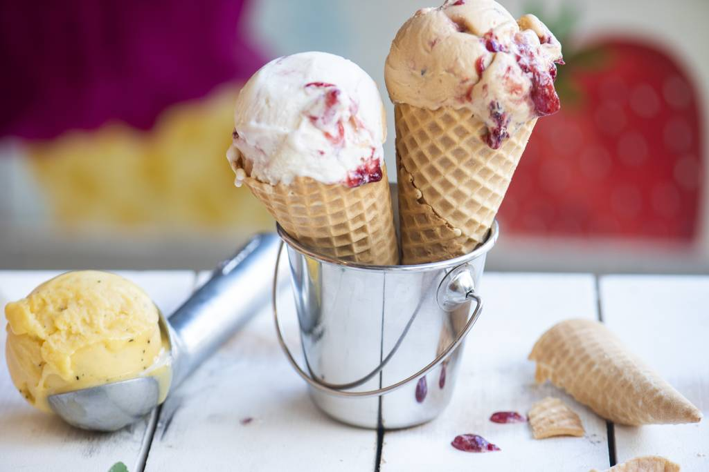

Receitas Literárias
Quem nunca sentiu aquela fome quando um personagem descrevia com todos os detalhes a comida que estava
provando? Então agora eu irei lhe contar algumas receitas.
Torta de Morango de A Seleção
Ingredientes:
- Um pacote de massa pronta para torta
- 1 lata de leite condensado
- 4 colheres de sopa de leite em pó
- 1 colher de sopa de manteiga sem sal (Pode ser margarina sem sal)
- Morangos (Duas caixas ou mais, dependendo do tamanho da sua forma)
Modo de Preparo
Comece espalhando sua massa pronta sobre a forma e leve ao forno a 180°C por 15 minutos, ou até ficar
bem sequinha e firme. Para o recheio pegue o leite condensado, misture com o leite em pó e a manteiga. Misture bem e leve ao
microondas por 3 minutos. Retire do microondas, misture e torne a colocar no microondas por mais 3
minutos. Quando esse tempo terminar, retire do microondas, misture e leve para a geladeira até ficar bem
firme. Para a montagem, pegue os morangos e os pique, espalhando-os pela base da torta. Cubra com o brigadeiro
já frio e firme. E agora espalhe mais morangos pela parte de cima do jeito que preferir. Bom Apetite!

Cookie do Atlas
Ingredientes:
- 250 gramas de manteiga sem sal, ou margarina sem sal
- 150 gramas de açúcar refinado
- 160 gramas de açúcar mascavo
- 2 ovos
- 350 gramas de farinha
- 3/4 de colher de chá de bicarbonato de sódio
- 1/2 colher de chá de essência de baunilha
- 250 gramas de gostas de chocolate
Modo de Preparo:
Misture a manteiga, com o açúcar refinado e o açúcar mascavo. Misture bem até ficar uma massa fofinha.
Acrescente os ovos, a farinha, o bicarbonate de sódio e a essência de baunilha. Misture bem, mas não
muito para não desenvolver o glúten, para ficarem macios e fofinhos. Acrescente as gotas de chocolate.
Forre uma forma com papel manteiga. e porcione os cookies na forma. Leve ao forno por 160ºC, por 10
minutos, depois desse tempo abra o forno e gire a forma, deixe por mais 10 minutos até as bordas ficarem
douradas. Não se preocupe os cookies saem molengas do forno mas logo se firmarão. Bom Apetite!

Milkshake do Charlie
Ingredientes:
- 40 gramas de chocolate amargo
- 2 bolas de sorvete de creme
- 4 colheres de achocolatado
- 1/2 xícara de leite
Modo de Preparo:
Derreta os 40 gramas de chocolate e misture as duas bolas de sorvete com o chocolate derretido e o
achocolatado. Adicione o leite. Misture bem e para decorar você pode usar uma calda de chocolate. Bom
Apetite!

Stracciatella
Ingredientes:
- gelo
- Sal Grosso
- 1/2 xícara de leite
- 1 xícara de creme de leite fresco
- 1/2 colher de sopa de baunilha
- 1/4 de xícara de açúcar
- 90 gramas de chocolate derretido
- casquinhas de sorvete
Modo de Preparo:
Comece fazendo uma reação química, misturando o gelo com o sal grosso. Coloque uma vasilha por cima do
gelo e acrescente o leite, o creme de leite fresco, a essência de baunilha, o açúcar e bata essa mistura
por cerca de 10 minutos. Leve ao congelador por 45 minutos e depois desse tempo você vai pegar o
chocolate derretido e respringar sobre o sorvete, esperar por alguns segundos até ele também congelar e
ficar bem firme. Depois bata de nov e leve ao congelador por algumas horas até ficar na consistência
certa.
